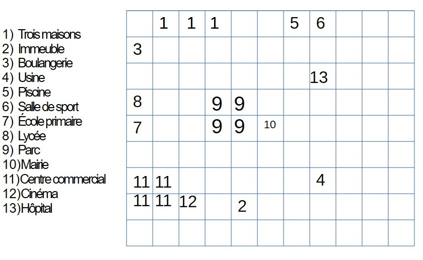

Règles de Survie
Les Sims ont trois besoins : Moral, Physique et Faim. Si la faim descend sous 25%, le Sim perd 5% de santé par heure.
La ville est structurée sur un plan romain (en damier) avec des bâtiments transparents.

| Sim | Âge | Profession |
|---|---|---|
| Sim 1 | 37 ans | Ouvrier |
| Sim 2 | 74 ans | Retraitée |
| Sim 3 | 17 ans | Lycéen |
| Sim 4 | 8 ans | Écolière |
| Sim 5 | 34 ans | Boulangère |
| Sim 6 | 50 ans | Maire |
Les Sims ont trois besoins : Moral, Physique et Faim. Si la faim descend sous 25%, le Sim perd 5% de santé par heure.